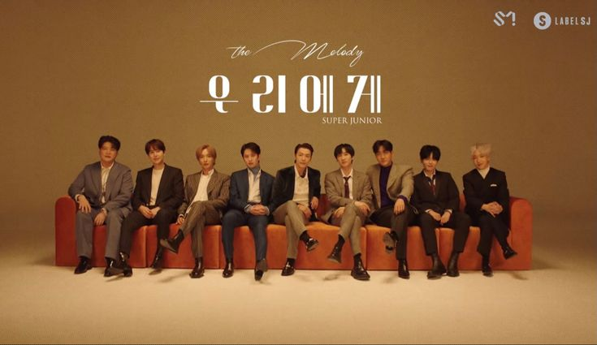
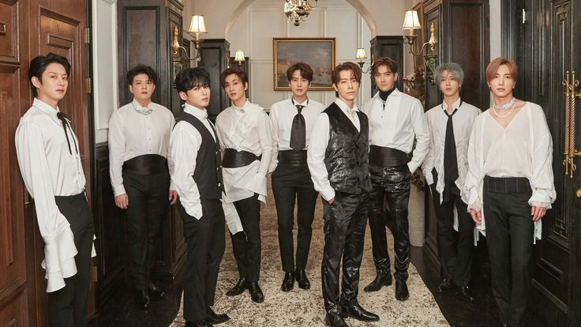
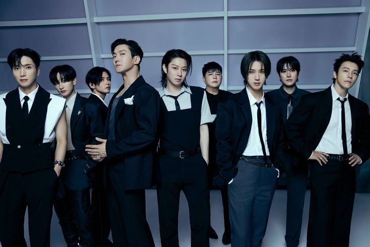
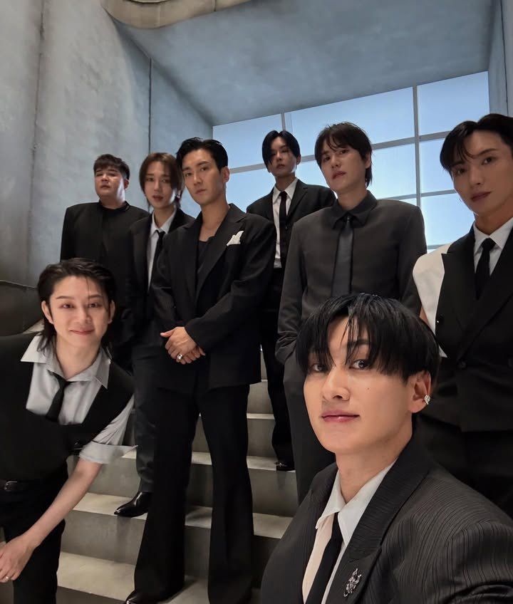
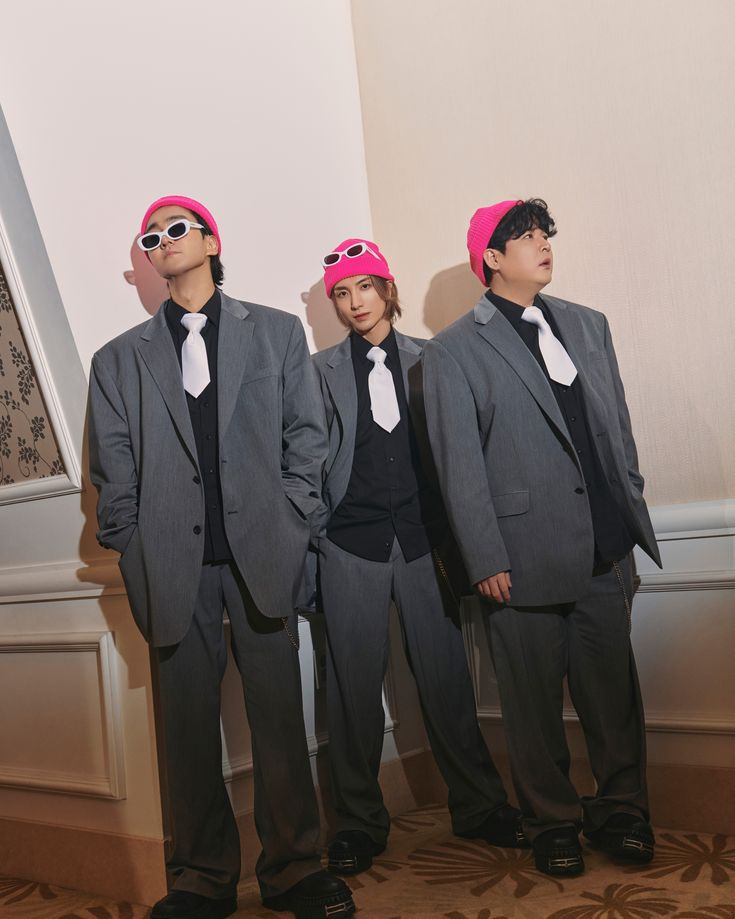
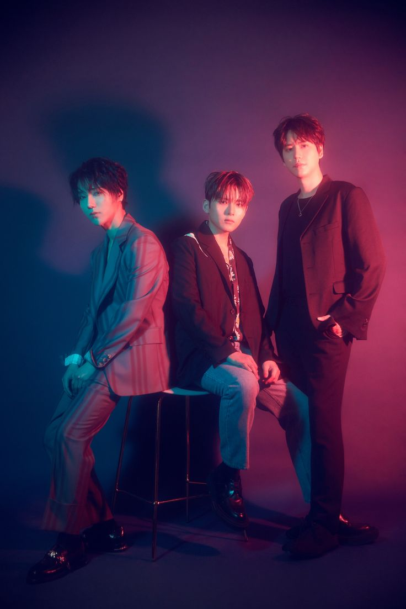
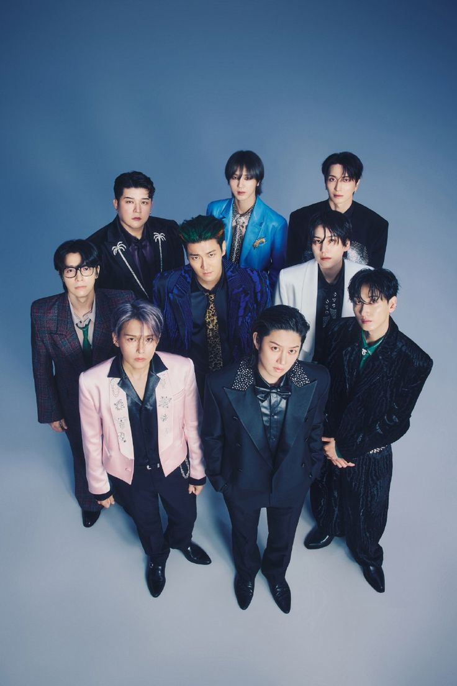

Super Junior adalah grup vokal pria asal Korea Selatan yang memulai debutnya di bawah SM Entertainment pada tahun 2005. Setelah 20 tahun berkarya, mereka tetap mempertahankan posisinya sebagai salah satu ikon K-pop generasi kedua yang tak tertandingi. Dijuluki 'Kings of Hallyu' dan dikenal sebagai pelopor sistem sub-unit, Super Junior merayakan ulang tahun ke-20 mereka pada 2025 dengan merilis album penuh ke-12, ‘Super Junior25’ (8 Juli 2025). Album ini memecahkan rekor pribadi mereka dengan penjualan minggu pertama tertinggi di Hanteo Chart, membuktikan popularitas mereka tidak luntur. Saat ini, grup ini beranggotakan sembilan personel aktif—Leeteuk, Heechul, Yesung, Shindong, Eunhyuk, Donghae, Siwon, Ryeowook, dan Kyuhyun—yang terus memukau panggung dunia. Dengan single utama "Express Mode," Super Junior terus memuncaki berbagai chart, memperkuat janji abadi mereka kepada E.L.F. (Ever Lasting Friends).
Untuk melihat member Super Junior MEMBER dan album yang dirilis ALBUM






